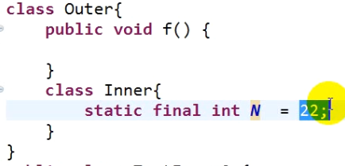

顶级类：一个独立的模块或者说程序单元。 不嵌套在任何类的内部的类, 但顶级类内部可以存在别的类。比如说下面的所说的外部类就是顶级类。
class Outer{ //外部类（外围类）
class Inner{ //内部类（内嵌类）
}
}
内部类的分类：
1.成员内部类
1）实例内部类（非静态的）
2）静态内部类（也叫类内部类、嵌套类）
2.局部内部类
3.匿名内部类
内部类主要的功能就是提供了更好的封装。
内部类的级别和成员属性、成员方法的级别是一样的。
外部类允许的访问修饰符只有: public、默认。因为外部类要么在包内使用,要么在包外使用
因为内部类的级别和成员一样,所以四种访问权限都可以用
除了静态内部类以外,其他的内部类(实例内部类、局部内部类、匿名内部类)类内都不允许定义任何的静态内容(但可以定义静态常量)。
如果内部类不是静态的,那么如何才能在内部类不创建对象就使用到那些静态内容呢?静态内容都是直接属于类的(而实例内容则属于对象),所以静态内容是属于内部类的, 而如果内部类不是静态的,则说明内部类是实例的,是属于对象的,不是直接属于类的。这就与内部类里的静态内容相悖了,这样显然无法直接越过内部类访问到内部类里的静态内容。成员类也是成员, 既然是成员就有实例成员和静态成员之分, 实例成员不属于类,当然不能不创建对象就访问(虽然创建内部类对象的引用时是用的 外部类名.内部类名),也就不可能访问到这个内部类里面的静态内容了,所以不允许非静态的内部类里定义任何静态内容。
"但可以定义静态常量"是要求定义的静态常量要在编译期就可以确定常量值的才可以, 这种在编译期就已经确定的常量值到了字节码文件中使用该常量值直接取代了常量的位置, 在字节码文件中,任何出现该常量的位置用的不是常量名了,而是常量值来代替。所以这里就无所谓静态不静态的问题了,他就是一个值而已。(其实常量都是这样,不管是不是静态常量)

在定义静态方法时需要注意的是静态方法中不能再定义静态变量了,会报错。因为静态方法里的变量已经是可以直接不创建对象就被调用该静态方法时使用到了,再将静态方法里面的变量定义成静态变量也就没有了意义(就算定义静态常量也会报错)。需要注意的是非静态方法中也不能再用任何static关键字。实际上, static修饰变量(或者说属性)仅仅可以修饰类的成员变量以及静态内部类里的成员变量, 还有就是可以在所有内部类中存在的静态常量了(注意我们常说的静态常量其实也是类的成员,不能出现在方法体里),就这三种。也就是说static只能修饰成员变量和方法和成员内部类，不能修饰局部变量和局部方法(java有局部方法吗?)和局部内部类
---------------------------------------------------------------------------------------------------------------
一、成员内部类
成员内部类的字节码文件的文件名为(不论是静态内部类还是实例内部类):外部类名$内部类.class
---------------------------------------------------------------------------------------------------------------
1.实例内部类
实例内部类归对象所有, 所以需要外部类的对象才能调用它
而且实例内部类里不允许定义静态成员。
定义方法:
class Outer{ //外部类
private int x ;
public void f(){}
class Inner{ //实例内部类
}
}
实例内部类举例:(里面有很多细节需要注意)

代码如下:

上图中需要注意的是, 虽然在定义实例内部类的对象引用时用的"外部类名.内部类名"的方式很像静态成员被访问的方式"类名.静态成员名",但其实内部类也只能这样访问了,不管内部类是不是静态的, 如果不用"外部类名.内部类名"的方式, 又怎么才能直接给内部类创建对象呢。所以这种访问方式是内部类独有的访问方式, 不论是不是静态内部类。而且实例是在定义一个变量(对象的引用)时才用"外部类名.内部类名"作为该变量的类型来使用, 其他的静态成员用"类名.静态成员名"只能用做调用使用,当然不可能再作为类型去定义一个变量。
注意：
(1)实例内部类内部不允许定义任何静态内容
(2)外部类的静态方法中不能出现直接访问实例内部类数据或方法的语句
举例:

(3)如果外部类成员变量、内部类成员变量、内部类方法中局部变量同名: 
从上图可以看出,this就相当于类的当前对象的引用, 而"."运算符的含义就相当于中文里的"的" , 那么"Outer.this.x"的含义就是"Outer类的当前对象的x变量"。并且在哪个类里, "类名.this"的"类名"就可以省略不写。
(4)成员内部类可以是抽象的:
下图是举例。但要注意静态内部类不能是抽象的, 因为abstract不能和static一起使用。想想也容易理解,定义成抽象的内部类, 当然是不想外部类直接调用它, 而是使用该内部类之前要先继承他, 变得不抽象,才能使用, 而如果给内部类加上static关键字, 则恰恰是为了说明该内部类是属于外部类的, 外部类能自己不实例化就直接调用它, 而抽象类里很多东西都是抽象的, 肯定是直接调用不了的, 所以静态内部类不能是抽象的, 只有实例内部类才可以。

--------------------------------------------------------------------------------------------------------------------------------------------------------
2.静态内部类(比实例内部类使用简单,因为静态内部类直接归外部类所有)
注意: static若修饰类,只能作为内部类而存在,否则会报错。因为用static来修饰某物的意义,就是为了表明它是属于它所在的(上一级)类的。所以用static修饰顶级类(或者外部类)的话, 就失去了static存在的意义。(对于顶级类来说,它的上一级是程序包, 不是类, 所以顶级类不能定义成static的)
定义形式:
class Outer{
static Class Inner{
}
}

--------------------------------------------------------------------------------------------------------------------------------------------------------
注意：
(1)接口中可以定义静态内部类，静态内部接口(静态内部类和静态内部接口在实际开发中用的不多)

具体例子如下:

(2)成员内部类继承问题(其他内部类还好, 要特别注意实例内部类被单独继承时的问题)

(3)子类内部类与父类内部类同名情况

----------------------------------------------------------------------------------------------------------------------------------------------
局部内部类：(直接在方法里面定义类)
定义:
class Outer{
public void function(){
class Inner{ //局部内部类。跟局部变量属于同一级别
}
}
}
局部内部类的字节码文件的文件名为 : 外部类名$N内部类名.class
(N是一个数字,这个数字是为了区分同一个类中的不同方法里的同名局部内部类。如下:)

局部内部类简单使用示例:

这两个局部内部类的字节码文件名为:

局部内部类需要注意的地方：
(1)局部内部类不能声明静态成员。(但是static final的可以, 前面写了原因, 就是因为它带个final)
(2)局部内部类处于静态方法中时,只能直接访问外部类静态成员,不能直接访问外部类的实例成员。(其实就和以前说的一样,静态方法中只能直接访问静态成员,外部类的实例成员当然不可以直接访问,要在静态方法中访问实例成员的话需要创建对象才能访问)

(3)局部内部类处于实例方法中可以直接访问外部类的静态成员和实例成员。(就和以前说的一样,实例方法中访问静态的、非静态的成员都可以)

(4)局部类对局部变量的访问 (以前不支持对局部变量的访问,以前只支持局部常量,现在已经支持局部变量,但不允许局部变量的值修改过)

若局部变量的值修改过,则编译就会报错

-----------------------------------------------------------------------------------------------------------------------------------------------------------
匿名内部类：(用法的形式有点类似于匿名对象(匿名对象就是创建对象后不引用,只使用一次就找不到了),如果某个类只使用一次,那就使用匿名内部类,比较简便)
匿名内部类的字节码文件的文件名为: 外部类名$N.class (N为数字, 和局部内部类一样,为了区分同名方法)
定义:

匿名内部类必须以子类或者实现类的形式存在, 否则是不允许的,但也不能既继承一个子类又实现一个接口,只能二选一。(其实也很好理解, 如果不作为子类去继承(或者实现类去实现)已有的类,从而调用它的成员,那匿名还有什么意义,如果要定义一个新类那么局部内部类就可以,多一个名字而已,如果是要在方法里面使用某个新的方法, 那么也是用局部内部类就可以解决。正是因为匿名,从而需要用到父类或者接口的名字来表示它)
匿名内部类的使用实例:
如果有如下父类Parent和子类Child:

如果Child类只用一次, 则可以创建成匿名类, 没必要单独创建成类, 并且可以达到一样的效果。下面就是与上面的代码效果一样的代码:

需要注意的是上面的代码匿名内部子类出现的部分中真正的含义是如下的:

虽然说分为三部分,但使用匿名内部类时这三部分通常是一起使用的,定义匿名内部类的意义就是为了使用,所以上面蓝框和红框部分在匿名内部类出现时通常是一起出现的,而绿框则是有时候直接跟在后面, 也有时候是通过引用来间接使用。
上面的匿名内部类是在成员方法里使用, 匿名内部类也可以在成员变量处使用:

匿名类里除了继承和重写父类(或接口)的成员以外,还可以定义自己独有的成员(成员变量和方法都可以),如下图:
定义独有的成员是没什么问题,但是如果不被匿名类立即调用 或 重写过的父类的方法调用 的话,那么以后就调用不到了。因为当匿名子类对象没有立即使用自己定义的独有成员的话,肯定是被父类引用所引用, 此时,由于自动类型转换, 该父类引用会屏蔽匿名子类对象独有的成员, 只可以调用父类有的成员。而这个时候又不可能通过强制类型转换,将父类引用强制转换成匿名子类对象再调用该匿名子类的方法, 因为匿名子类根本没有类名,所以根本无法实现强制类型转换。

类似于继承父类,匿名内部类实现接口的两种形式如下:

匿名内部类需要注意的地方：
(1)必须实现一个类或一个接口。(匿名内部类可以继承普通类也可以继承抽象类,也可以实现接口)
(2)不能定义静态数据(但是static final的可以, 前面写了原因, 就是因为它带个final)
(3)不能定义构造器 (类名都没有,而构造方法和类名同名,当然不能定义构造方法了。但可以定义构造块)
(4)匿名内部类不能是抽象的 (上面说了, 匿名内部类一定义出来就是要配合创建对象使用的, 所以自然不能是抽象的, 抽象的无法创建对象,不是抽象类自然也就没有抽象方法了)
(5)传参问题(定义匿名内部类时,可以在创建对象的同时给父类构造传参)

(6)同名问题。
前面说过,如果有两个不同的接口中有同一个抽象方法,实现类同时实现这两个接口时,重写该同名抽象方法时直接统一重写成一个即可。但是如果就是想按不同的接口区分实现这个同名方法,则可以用匿名内部类,虽然这样没有什么意义,但是提供下思路:

--------------------------------------------------------------------------------------------------------------------------------------------------------
函数式 接口：
接口中抽象方法的个数只有一个, 这样的接口就叫函数式接口
如: (下图中的"@FunctionalInterface"就是函数式接口的注解, 和前面的"@Override"类似,用于编译检查,这里自然就是检查定义的是否是一个函数式接口)

首先可以用匿名内部类来实现函数式接口: (匿名内部类写法比较繁琐,为了进一步简化,于是就有了后面的Lambda表达式)

Lambda 表达式：
Lambda 表达式的作用就是用来替换匿名内部类的繁琐写法的。jdk8.0中提供了大量的函数式接口,如果用匿名内部类来写就太麻烦了,用Lambda会更简化。(用Lambda的目的主要就是为了简便,但代码可读性会变差)
要注意的是Lambda表达式只能实现函数式接口,其他的任何类或者接口都不行。
由于Lambda 表达式是匿名内部类的简写,所以整个Lambda 表达式就是一个对象, 和匿名内部类一样,是其对应的函数式接口的一个匿名实现类的对象。
语法格式:
（形参列表）-> {代码块}
Lambda表达式代替匿名内部类的四种用法:

示例:

方法传参是Lambda表达式用的最多的。
用一个示例来一步步说明匿名内部类和Lambda表达式的用途:
首先是多态来实现比较小猫小狗跑的快慢:

但如果小猫小狗这个类只用一次, 那么就没有必要定义成类了,直接用匿名内部类来创建一个对象使用即可,然后直接用匿名内部类的对象来作为参数传给check()方法。所以代码变成:

因为接口Run是一个函数式接口,故再进一步改进成Lambda表达式。

需要注意匿名内部类和Lambda表达式的一个区别是:
匿名内部类可以直接用Object的引用来接收匿名内部类的对象,而Lambda表达式则不可以

但Lambda表达式可以通过下面的两种方式来进行类型转换: (当然这两种方式匿名内部类自然都是可以做到的)
第一种是先用Run类型来接收,再进行自动类型转换为Object的
第二种则是通过强制类型转换为Run类型(注意是强制类型转换为Run类型),再通过自动类型转换为Object类型

----------------------------------------------------------------------------------------------------------------------------------------------------
方法引用：(比Lambda更简化,也是针对函数式接口的情况, 主要是针对某些Lambda情况下)
方法引用适用的四种情况(注意方法引用使用时要当Lambda表达式只有一行代码,并且符合下面四种情况之一)
1.引用类方法（即引用静态方法）
类名::静态方法名
2.引用特定对象的 实例 方法
特定对象::实例方法名
3.引用了 某类 对象 的 实例方法
类名::实例方法名
4.引用 构造器
类名::new
(注意区分特定对象和某类对象,特定对象是指该每次调用该方法使用的对象一直是同一个地址的同一对象;某类对象是指某个类型的对象,它可以每次调用该方法都是不同地址的对象,但都是同一个类的,某类对象一般是通过方法的参数传过来的,所以对象地址才能一直改变。而特定对象一般不是方法的参数传过来的)
上面的四种分类归类如下:

方法引用可以有多个参数传递,而不是只能该方法只有一个参数, 只要这些参数调用时不需要多加任何内容,只是单纯的传参就能简写成方法引用。
比如:
(a,b) -> Person.compareByAge(a,b)
可以使用方法引用简写为:
Person::compareByAge
而:
水电费(a,b) ->System.out.println(a+b)则不可以用方法引用简写, 因为有这个"+"的存在, 如果改写为System.out:println, 那么系统根本不可能知道两个参数在println()方法中要加一个"+", 如果不是"+",而是","呢? 所以编译器不可能推断出来。(究其原因是println方法只能传一个参数,所以这里不是简单的调参,所以无法使用方法引用)
上面的四种情况使用示例:
1、第一种情况:引用类方法。
下面代码主要是实现函数式接口里将字符串转成整型的抽象方法
用Lambda表达式的时候:

用方法引用简化为:

类似于上面的,方法引用的前三种情况使用如下:(第四种情况单独在后面)
分别按情况序号排好如下,前面是方法引用运用的情景, 后面是函数式接口里的抽象方法具体实现的功能

第四种情况如下:

--------------------------------------------------------------------------------------------------------------------------------------------------
Array类中用到的函数式接口：
1、IntUnaryOperator 一元运算的函数式接口
(相应的还有LongUnaryOperator、DoubleUnaryOperator、BinaryUnaryOperator(引用类型用的), 用法都与IntUnaryOperator类似)
Array.parallelSetAll(arr , op)方法中,会将一元运算的结果替换掉arr数组里的内容。
op是IntUnaryOperator函数式接口的实现类对象, 这个接口表示一元运算, 该接口的抽象方法为int applyAsInt(int operand),operand参数在int applyAsInt(int operand)方法中传入的是数组的下标, 返回值作为该下标对应的元素值,依次替换掉所有数组所有元素的值
下图中返回的结果是: [2, 3, 4, 5, 6]

2、IntBinaryOperator 二元运算的函数式接口
(相应的还有LongBinaryOperator、DoubleBinaryOperator、BinaryOperator(引用类型用的), 用法都与IntBinaryOperator类似)
和上面类似, Array.parallelPrefix(arr , op)方法中,会将二元运算的结果替换掉arr数组里的内容。
op是IntBinaryOperator 函数式接口的实现类对象, 这个接口表示二元运算,该接口的抽象方法为int applyAsInt(int left, int right), 两个参数left和right是两个操作数,在int applyAsInt(int left, int right)方法中left和right参数都指代都是数组中的元素, right表示当前下标位置的元素, left表示比right前一个位置的元素 (如果right是下标为0处的元素时,则此时left==1)。提供这两个操作数进行运算, 运算的结果替换掉当前下标的元素, 然后依次运算替换掉所有下标的元素
下图中,因为是对同一数组操作,所以两次运算后的结果进行了叠加,所以有了最后的结果

3.IntConsumer 遍历数组元素的函数式接口
(相应的还有LongConsumer、DoubleConsumer、Consumer(引用类型用的), 用法都与IntConsumer类似)
Array.stream(arr)返回的是一个流(不是IO流),是对数组中的元素进行统计运算的, 比如算数组中的最大值、最小值、平均值、求和等。Array.stream(arr)有很多方法,而Array.stream(arr).forEach(action)是遍历数组元素的方法。action参数是IntConsumer函数式接口的实现类对象, 这个接口是遍历数组元素的函数式接口,该接口的抽象方法为void accept(int value),该方法没有返回值, 在Array.stream(arr).forEach(action)方法中value参数指代数组中的元素,可以用此方法来依次打印数组中的元素。

———————————————————————手写与上传资料分割线——————————————————————